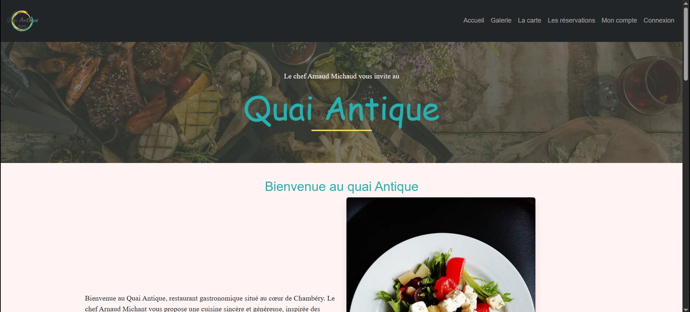
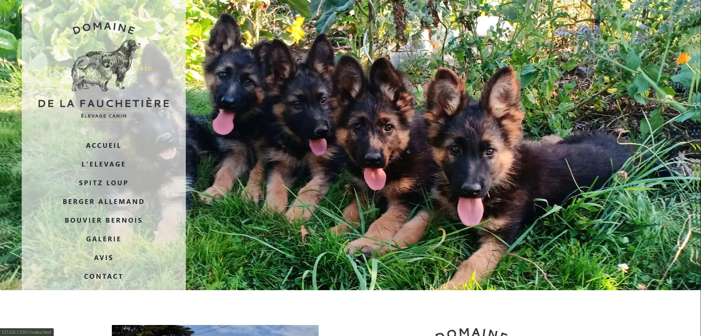
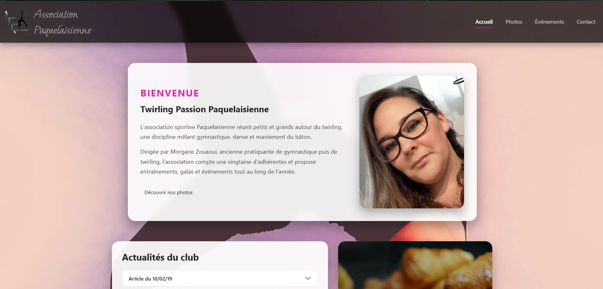
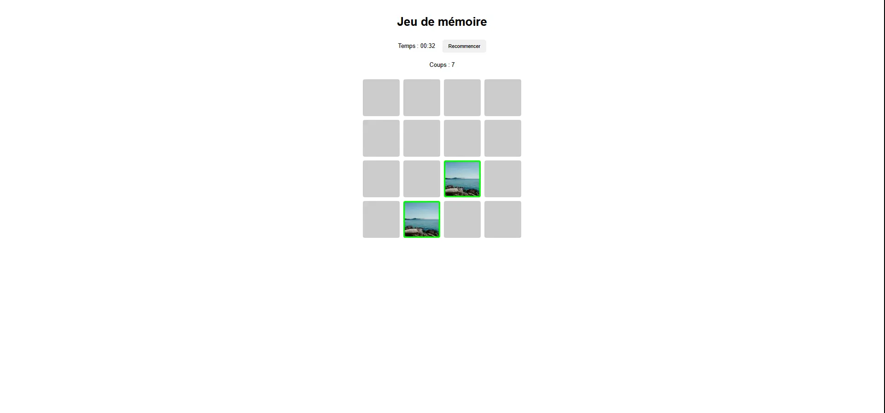
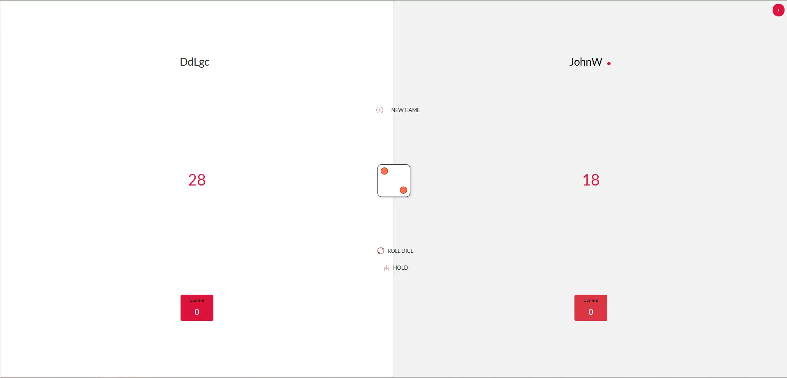

Front-end
Création d'interfaces web responsives, accessibles et adaptées aux différents supports.
- HTML5
- CSS3
- Sass
- JavaScript ES6+
- TypeScript
- Angular
- Bootstrap
Bonjour, je suis
Je conçois et développe des applications web modernes, responsives et maintenables, du front-end au back-end.
Compétences
Un environnement technique construit au fil de mes projets, de ma formation et de ma pratique du développement web full stack.
Création d'interfaces web responsives, accessibles et adaptées aux différents supports.
Développement d'applications côté serveur, gestion des données et conception d'API.
Outils utilisés pour concevoir, versionner, documenter et maintenir mes projets.
Portfolio
Une sélection de projets illustrant mes compétences techniques, mon parcours et l'évolution de ma pratique du développement web.
Des applications intégrant interface utilisateur, logique métier et développement back-end.

Application web de restauration intégrant une API Symfony, l'authentification, la gestion des rôles, les réservations, les menus et une interface d'administration.
Application web Full Stack développée dans le cadre de ma formation. Le projet comprend notamment des travaux sur l'authentification, la gestion des employés, le catalogue public et les filtres TypeScript, avec une organisation Git par fonctionnalités.
Des projets retravaillés pour améliorer leur interface, leur adaptation aux différents écrans et leur maintenabilité.

Site vitrine modernisé avec contenu dynamique, composants réutilisables, galerie interactive, optimisation responsive et améliorations SEO.

Refonte d'un site associatif avec amélioration du responsive design, de la galerie, des composants d'interface et de la structure du code.
Des applications interactives pour approfondir la manipulation du DOM et la logique de programmation.

Jeu de mémoire avec mélange des cartes, animations, compteur de coups, interface responsive et détection de la victoire.

Jeu interactif à deux joueurs avec gestion des tours, scores temporaires, règles de victoire et mise à jour dynamique de l'interface.
Retrouvez également mes exercices et autres projets sur GitHub.
Voir tous mes dépôtsAu fil de mes projets, j'ai progressivement mis en place un ensemble de bonnes pratiques afin d'améliorer la qualité, la maintenabilité et la cohérence de mon travail.
Utilisation de branches dédiées, historique Git propre et organisation du développement autour de fonctionnalités clairement identifiées.
Des commits courts et explicites suivant une convention cohérente afin de rendre l'historique du projet plus lisible.
Conception et vérification des interfaces sur différents formats d'écran afin d'assurer une expérience utilisateur cohérente sur desktop, tablette et mobile.
Organisation du code, nomenclature cohérente et refactorisation régulière afin de faciliter l'évolution et la compréhension des projets.
README structurés, documentation des procédures importantes et description claire de l'installation, du fonctionnement et des choix techniques.
Préparation des projets pour leur mise en production et utilisation de solutions adaptées à leur architecture.
À propos
Passionné par l'informatique et les technologies web, j'ai choisi de me reconvertir dans le développement afin d'en faire mon métier.
Mon parcours m'a amené à développer progressivement mes compétences en front-end et en back-end à travers ma formation, mes projets personnels et la reprise de plusieurs anciens projets.
Aujourd'hui, je cherche à construire des applications plus propres, plus cohérentes et plus maintenables, tout en continuant à approfondir mes compétences techniques et mes méthodes de travail.
Contact
Une opportunité professionnelle, un projet ou simplement envie d'échanger autour du développement web ? Vous pouvez me retrouver via les liens ci-dessous.